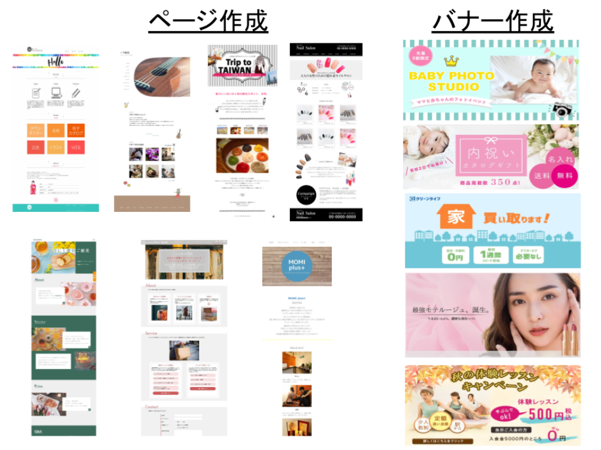

受講料無料キャンペーン開催中！

本キャンペーンについては条件がございますので
「注意事項」もあわせてご確認ください。
注：TVCMにて掲載されておりますギフト県のプレゼントキャンペーンは終了しております
このような悩みの声に応えたい想いから、在宅のスキマ時間でもしっかりと稼ぐことができる「ママ専用Webデザイン講座」を2019年3月より提供しています。
Webデザインのスキルを身に着けると高単価の在宅ワークに挑戦できます。 子供との時間を増やしたい、サンゴのキャリアアップ、IT知識やスキルを身に着けたいママにおすすめです。

WebデザインはPCがあれば在宅や外出先でも働くことができ、納期のスケジュールも自分で調整することができるため育児と両立しやすいお仕事となっています。
多くのWebデザイナースクールでは、
・子供が預けられなかったり
・開催時間が夜や休日中心だったり
・参加者がママ以外の人であったり
というケースがほとんど。
ママが安心して教育を受けられる機会が極端に少ないのが現状です。
Fammは、
・LIVE配信
・無料シッターサービス
を備えた唯一のママ専用Webデザインスクールとして、
在宅ワークで月10万円以上の収入をめざし、未経験からでも挫折せずにスキルを身に付けられる環境があります。
自宅で空き時間に未経験から実務レベルへ
対面授業と同等以上の学びやすさ
無料でシッターがお預かりします
受講期間だけでなく卒業後半年間も質問し放題
デザイン、動画、マーケなど60スキル以上が無料
卒業後のお仕事を5件まで保証
新型コロナウイルスによる影響で外出が難しい方、遠方にお住いの方にも受講いただきたく、無料シッター付きのLIVE配信講座を立ち上げてから毎月即満席となっています。

Webデザインのお仕事をするために必要なバナー制作・ページ制作ができるようになります。

保育士資格や幼稚園や保育園での勤務経験のあるシッターを中心にシッターサービスを無料で提供させていただきます。

講義中や自宅学習でのサポートを十分にご提供するために、あえて最大8名までの少人数制クラスにしています。
参加者のママはほぼ全員が未経験者ですので、ご安心ください。
忙しいママ向けだからこそ、1か月の短期で身につくカリキュラム。ママにとって最も参加しやすい平日の午前中に開講します。おうちでの受講なので、移動の心配もありません。

LIVE配信による講義の様子を、毎回録画もいたしますので、いつでも見返すことができます。
少人数制だからこその、講義前後での講師によるサポートも可能です。

講座の卒業後、Fammから実際の案件発注を5件まで保証しています。
継続的に仕事を得るために必要な「実績作り」を実現できます。
Fammスクールの過去の卒業生の中で、この発注をきっかけにして次の仕事につなげている方が多数いらっしゃいます。
（IT系への就職が決まった方も！）

Webデザインに加え、Webマーケティング、動画など、100スキル以上の応用講座を全て無料で提供しています。
また、卒業後も引き続き6ヶ月間は講師への質問回数に制限はありません。
。
日々の学習でつまずいた時はもちろん、実際にお仕事を進める中での相談・添削も可能です。
Webデザインスキル
グラフィックデザインスキル
Webマーケティングスキル
動画編集スキル
Webサイト設計
在宅ワーク準備スキル
写真撮影スキル
ビジネスPCスキル
マインドセットスキル
ライティングスキル
CMS運用スキル
その他スキル
※上記は応用講座の一部であり、ご要望に応える形で随時新たな講座が追加されています。
現職や復職に向けて育休中に学習をして、「より仕事で活躍したい」「お仕事の領域を拡げたい」という方にも、１か月の短期で学べるのでおススメです。


時間は全て10時〜13時、1回3時間の講義で無理なく学べます。講義外でも、いつでも何度でも質問できます。
※やむを得ぬ事情により、講義日程や内容が一部変更となる可能性がございます、あらかじめご承知ください
※講義ではデザインの作り方・考え方・実際の仕事で気をつけるべきポイントなどもご紹介します
※授業を一緒に受けるママ8名と講師が参加するオンライングループ内で、講義以外でも宿題・課題の提出や講師からのフィードバック反映などを踏まえ、1ヶ月で45時間-60時間の学びを集中的に行っていただきます


※アンケート回答数：（2021年4〜7月に実施した過去スクール参加者へのアンケート調査より、N＝303）
講義の度に満足度調査を実施。各コースの担当者が満足度や習熟度の状況をみながら、短期集中コースをフルに活かしていただくためのアドバイス・サポートを行います。
短期のコースでは学習がストップしてしまうと習熟度に大きな影響を与えます。授業や日々の課題に関する質問には遅くとも1営業日後には回答。参加者の学びのスピードを止めない体制でサポートします。
NPS®(ネットプロモータースコア)と呼ばれる先進的な顧客満足度の調査手法を取り入れ、シビアな視点で顧客体験のチェックを毎回行い、サービス品質の向上に努めています。
月毎に開催：全5回、週に約1講義のペースで開催
日程の詳細は説明会にてご案内（ご希望に添った日程をご案内いたします）
・プロデュース、ディレクション、プランナー ・カメラ撮影、動画撮影、HTML、CSS、Javascript、jQuery ・Dreamweaver、Photoshop、Illustrator、 XD、Premiere 等
・1999年 都内インターネット専門学校に在籍しつつ、WEBサイト制作ユニット「STUDIO Freesia」を結成。 街のパソコン教室やWEB系派遣会社の登録者向け講師を担当。 ・2004年〜2006年 WEB制作会社にて、ディレクション・設計などを担当。 中小から大企業までのWEBサイト制作に携わるほか、WEB系専門誌の寄稿や企画を担当したり、Adobeオフィシャルトレーニングブック等を執筆。 ・2007年以降は再びフリーランスへ。WEBサイト企画・プロデュース・制作・運営をしつつ、デザイン専門学校、カルチャースクール、職業訓練校などのWEBデザイン講師を担当。
・Photoshop/Illustrator/Adobe XD ・HTML/CSS/Sass/Javascript/jQuery ・Wordpress/PHP
・学生時代にフランスの大学に語学留学 ・帰国後、2008年より外資系企業でウェブデザイン、フロントエンド開発を担当 ・2017年よりフリーランスとして、ウェブデザイナー兼フロントエンジニア として活動 ・数社を渡り歩き、大規模なウェブサイトの制作・開発に携わる ・現場で実際に手を動かす傍ら、デザインやコーディングのアドバイザーも務める
・Photoshop・Illustrator・XD/HTML・CSS
・jQuery・Wordpress
・ディレクション/取材・ライティング
・大学卒業後、服飾雑貨メーカーにて企画/広報として、企画提案/プレスリリース制作/Web・ECサイト運営
・2012年～2015年 企業インハウスWebデザイナー
・2016年 産休・育児休業
・2017年～ フリーランスとして活動中
・Illustrator/HTML/CSS/javascript/jquery/レスポンシブル/Wordpress/Premier
・20代前半営業からパソコン教室の講師を経て25歳で起業。
・30歳から育児を中心に据えフリーランスとして活動。
・福岡の個人事業、小さな会社のホームページや各種デザインを中心に活動。
・2018年11月よりストアカでWordPress中心のプライベートレッスンもはじめ、1年で150名以上にレッスン。
・2019年3月から動画編集事業もはじめYoutubeでの動画編集にも従事。
・Photoshop・Illustrator / HTML・CSS・Javascript・jQuery
・運用サポート・アクセス解析・SEOライティング・運用改善企画提案
・KURU Designを運営し、大阪市と堺市でWeb制作を 中心に活動
・理念「拡げるキッカケを共創する」を軸に、①自分の未来を切り開くスキル習得のサポート、②自立してウェブサイトを運用できるアシストを行う。
・IT会社でWebデザインやネットショップの運営→大手企業のインハウスでWebデザイナー
・現在はフリーランスとして活動しながら、職業訓練校やウェブスクールにて講師・企業のウェブ運用アドバイザー顧問・ウェブ制作に従事
他社様は「就職を前提としたコースや料金体系」になっているところがほとんどです。 Fammスクールは「ママが在宅で月に10万円以上を稼ぐことに特化」して本当に必要な内容を選び抜くことで低価格を実現しています。

*LIVE配信講座の場合はおうちにシッターが伺い、対面講座の場合はキッズスペースでお預かりします。
*卒業後、完全無料のオンラインコースで学ぶことができます。
ここではお伝えしきれないサービス内容の詳細説明や、気になる点・ご質問にお答えする電話説明会を実施いたします。
現在のご状況や今後の在宅ワーク・働き方の希望を踏まえたカウンセリングも合わせて実施いたします。
将来に関するご不安・モヤモヤに対する相談やアドバイスが欲しい！という目的でもぜひお気軽にご参加くださいませ。
※お子様とご一緒でも全く問題ございません。
※途中で電話を止めたりなどもできますので、お子様を最優先のうえ電話説明会ができますので、ご安心ください。
09:30 ～10:15(※残1) 10:30 ～11:15(※残1) 11:30 ～12:15(※残1) 12:30 ～13:15(※残1) 14:30 ～15:15(※残1) 15:30 ～16:15(※残1) 16:30 ～17:15(※残1) 16:30 ～17:15(※残1) 17:30 ～18:15(※残1) 18:30 ～19:15(※満席) 19:30 ～20:15(※残1) 20:30 ～21:15(※残1)
09:30 ～10:15(※残1) 10:30 ～11:15(※残1) 11:30 ～12:15(※残1) 12:30 ～13:15(※残1) 14:30 ～15:15(※残1) 15:30 ～16:15(※満席) 16:30 ～17:15(※満席) 17:30 ～18:15(※残1) 18:30 ～19:15(※残1) 19:30 ～20:15(※残1) 20:30 ～21:15(※満席)
09:30 ～10:15(※残1) 10:30 ～11:15(※残1) 11:30 ～12:15(※満席) 12:30 ～13:15(※残1) 14:30 ～15:15(※残1) 15:30 ～16:15(※満席) 16:30 ～17:15(※満席) 17:30 ～18:15(※残1) 18:30 ～19:15(※残1) 19:30 ～20:15(※残1) 20:30 ～21:15(※残1)
09:30 ～10:15(※残1) 10:30 ～11:15(※残1) 11:30 ～12:15(※残1) 12:30 ～13:15(※残1) 14:30 ～15:15(※残1) 15:30 ～16:15(※残1) 16:30 ～17:15(※残1) 17:30 ～18:15(※残1) 18:30 ～19:15(※残1) 19:30 ～20:15(※残1) 20:30 ～21:15(※残1)
09:30 ～10:15(※残1) 10:30 ～11:15(※残1) 11:30 ～12:15(※残1) 12:30 ～13:15(※残1) 14:30 ～15:15(※残1) 15:30 ～16:15(※残1) 16:30 ～17:15(※残1) 17:30 ～18:15(※残1) 18:30 ～19:15(※残1) 19:30 ～20:15(※残1) 20:30 ～21:15(※残1)
※カウンセリング付電話無料説明会のご予約や、講座への本申込についても、原則先着順となります。
※ぜひ、お早目のお申込をお願いできますと幸いです。
A: 基本的には1週間に1回、1回の講座あたり3時間程度を想定しています。（一部、週2回の日程がございます）各講座ごとでどのようなことを学んでいただくかの詳細などは、説明会でもご説明させていただきます。
A: Timers社は子育て家族向けのアプリを運営している会社ですので、お気軽にお子様とご一緒にご参加ください。また無料でご自宅にシッターサービスを提供しますので、ママさんにも安心して授業を受けていただくことが可能です。※地域や日程が合わない場合は、費用を負担をしますので自己手配をお願い致します。対面講座の場合にはキッズスペースもシッターも常駐しております、講義の教室からリアルタイムで、お子様の様子を見ることもできます。
A: 無料ですので、お気軽にご参加ください。説明を受け理解を深めて頂いた上で、その場でお申し込み頂くか、ご検討のうえ後日申し込みかもお選び頂けます。
A: 大丈夫です。本講座は、Webデザイン初心者・未経験の方向けを前提にした講座コースなので、安心してご参加ください。
A: 説明会でも詳細をご説明させていただいていますが、Fammママ専用スクールの1ヶ月のWebデザインコースの講座受講ですぐに月収60万円が超えることはありません。講座受講後、在宅でのお仕事を受け始め、継続的に実績作り・スキルアップをされ、Webデザイナーとしての経験を重ねていく上で目指せる実現可能なケースだとご理解ください。

Fammのママ用Webデザイナー講座を運営している株式会社Timersは、100万人以上の会員を抱える子育て家族アプリFammを運営している会社となります。子育てママの新しいキャリアや多様な働き方を応援したいという想いから、Fammの利用者や社内の子育てママの声をもとに、本講座をスタートいたしました。